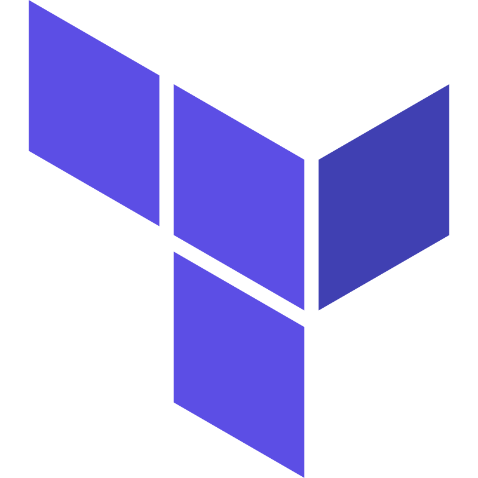
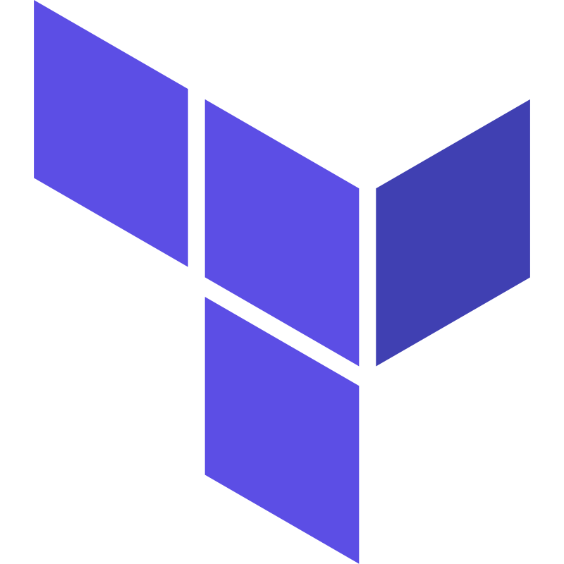

My Projects
Telegram Bot
This project showcases a Telegram bot capable of analyzing images sent to it. Using the YOLOv5 AI model, the bot detects objects in the image and returns a list of identified objects to the user. The project demonstrates advanced DevOps capabilities, including infrastructure provisioning as code (IaC) in AWS using Terraform. The connection process is managed with Ansible, which connects to each EC2 instance and deploys the relevant Docker container, whether it is the AI model or the Telegram bot server.
Technologies used: AWS, Terraform, Ansible, Docker, GitHub Action, Linux Command-Line.
 



Streaming (Netflix) Website
In this project, I developed and deployed a Netflix-style microservices application using Docker, Kubernetes, Jenkins, and ArgoCD. The project involved containerizing microservices, setting up a CI/CD pipeline for automated deployments, and implementing GitOps practices with ArgoCD to manage continuous deployment. I utilized Jenkins to automate the building and pushing of Docker images to DockerHub, and Kubernetes for orchestration. The goal was to create a fully automated, scalable solution for deploying and managing microservices in a cloud-native environment.
Technologies used: GitHub, Jenkins, Docker, YAML, ArgoCD, Kubernetes.


Disko
The Disko Project, developed in collaboration with Octopus Computer Solutions, provides an efficient solution for managing Docker Images in air-gapped environments. This project was part of my studies at ORT Tel Aviv College and was successfully submitted and evaluated by MAHAT (The Israeli Ministry of Labor and Social Affairs). The system features the ability to display image statistics by registry, copy images between registries, and migrate images in Kubernetes while maintaining the cluster's operational stability. As the team leader, I focused on ensuring full automation through advanced CI/CD pipelines (GitHub Actions) and comprehensive unit testing. Originally designed for internal company use, this project is set to become an open-source solution, and I am proud to have contributed to its development and to making it available to the broader community.
Technologies used: Kubernetes, Helm, Python, PyTest, GitHub Action, Docker, YAML.


Resume

Download my CV